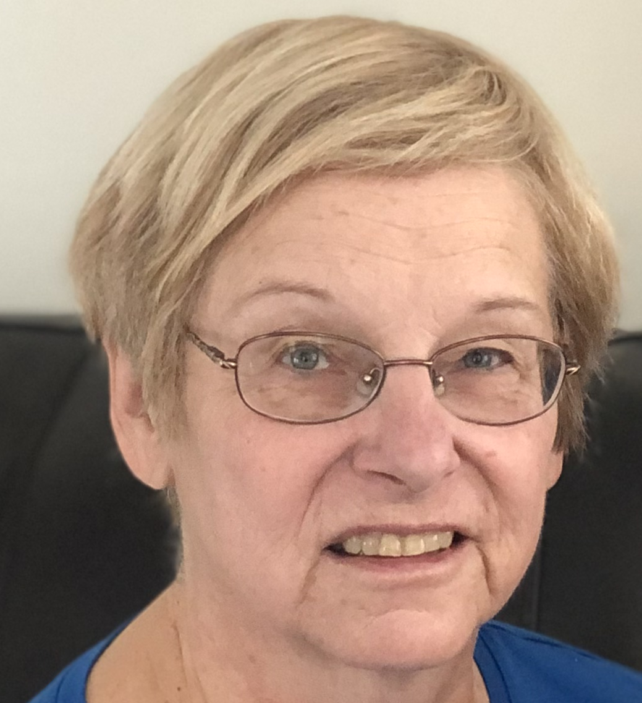

Though it may sound cliche, Joan’s greatest achievement is having a family. She has always wanted kids, and now loves being the go-to grandma. Mia and Ben have spent countless sleepovers at her house. Mia also has fond memories of watching I Love Lucy with her during ‘Lucy nights’ and playing piano together.
Joan is also immensely proud of her education. Her parents didn’t want her to go to college, let alone get an advanced degree. Her father didn’t think it was necessary for a girl, and she had to fight for her opportunity to go to Loyola. While her brother dropped out after a semester, she finished her undergrad as a psychology major. Later, when her youngest was in elementary school, she went back to school for her MA in the art of teaching. At age 40, she became a (widely loved) middle school teacher who specialized in math and literature. Her favorite book to teach is The True Confessions of Charlotte Doyle.
Nowadays, Joan enjoys scrabble, long walks, and researching her family history. This timeline is possible because she wanted to learn about her past, and she was determined to find it out.